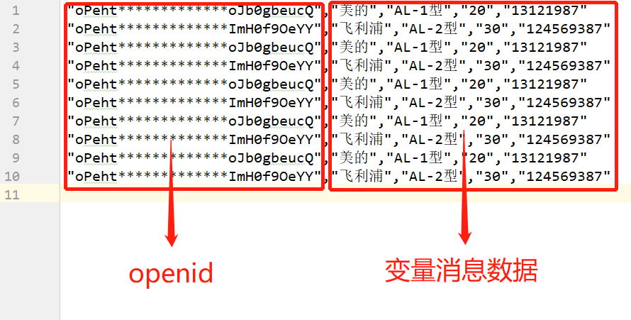
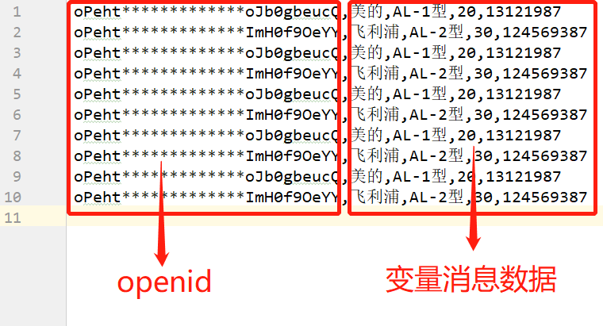
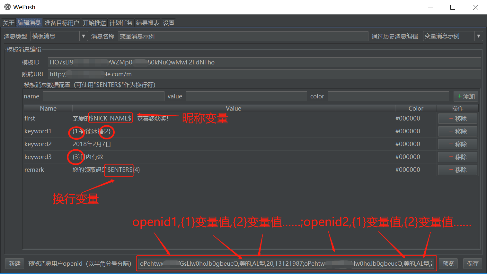
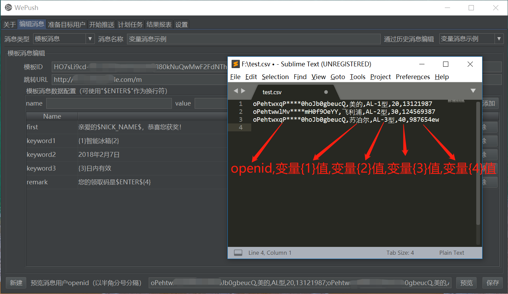
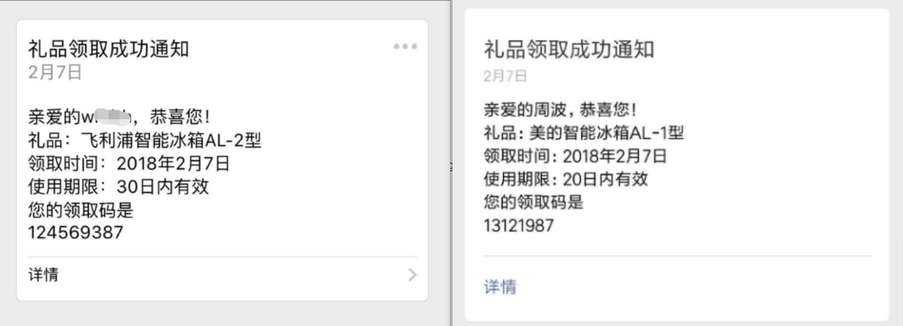

How WePush can help（工作原理）？
通过多线程实现快速批量发送各类微信短信等消息
目前支持：微信模板消息-公众号、模板消息-小程序、微信客服消息、阿里云短信、阿里大于模板短信、腾讯云短信、云片网短信
可扩展，后续会继续支持更多消息类型
WePush适用哪些场景？
可能的场景如：
批量发送奖励、活动、等各类通知
批量发放消费码、券等
批量发送各类服务通知
微信服务号各种模板消息
……
通常的执行流程？
①编辑消息->②准备目标用户->③开始推送->④推送完毕，保存结果数据
①编辑消息：
点击“新建任务”
选择“消息类型”，填写任务名称，编辑消息内容
填写能够预览消息的用户openid/手机号，点击“预览消息”
预览成功，内容符合预期后，点击“保存”
②准备目标用户：
可根据需要，通过文件（csv/txt），SQL，微信公众平台或历史推送数据等导入用户数据
csv文件格式示例：

txt文件格式示例：

③开始推送：
勾选“空跑”，点击“开始”
空跑可以预览整个推送过程，空跑模式不会真正发送消息给用户
此时可以调整“每页分配用户数”和“每个线程分配的页数”，进而调整推送的线程数
空跑没问题后，取消勾选“空跑”，点击开始，正式推送开始，等待推送完毕
④推送完毕：
推送完毕后会提示保存此次推送成功、推送失败和未推送的数据
变量消息及如何设置变量消息？
当每个用户推送的消息有区别时需要使用变量消息
目前只支持从文件导入，通过SQL导入和全员推送不支持变量消息
编辑消息时增加变量以及在预览时的设置示例：

编辑消息时增加变量以及在从文件导入时的设置示例：

最终效果示例：

暂停/中断后怎样继续？
暂停后WePush会自动保存已发送和未发送的数据
在“准备目标用户”tab下的“从历史导入”可以选择这部分数据继续发送
发送预览消息失败如何处理？
根据提示的错误解决就行了
常见的问题有：模板ID不正确，ip地址不在公众号安全设置的白名单中等
推送微信消息需要满足的条件？
公众号需要是认证的服务号，且开通了开发者模式
在WePush设置中正确填写对应的APPID等参数并保存
通过SQL导入需要怎么写？
只要查询出的结果集只有一列openid（短信时对应的是手机号）就可以，列名不重要